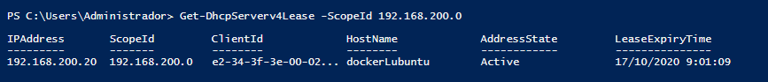

3.4. Comprobando el funcionamiento
En cualquier servicio resulta fundamental poder comprobar su funcionamiento, para detectar algún error en su ejecución, problema de seguridad o para la generación de informes. Las comprobaciones en el servicio DHCP implican también la comprobación de las concesiones(leases) concedidas.
3.4.1. Windows
Una vez tenemos configurado nuestro servidor, podemos consultar su estado en la pantalla de administración, en el apartado de lista de concesiones vemos las configuraciones de cliente actualmente activas.
En realidad esta información se almacena en el fichero %SystemRoot%System32dhcpDhcpSrvLog-XX (Donde XX es el dia de la semana)

También tenemos la posibilidad de consultar esta información a través de algunos comandos de PowerShell.
PS C:\> Get-DhcpServerv4Lease -ScopeId 192.168.200.0 [-AllLeases] PS C:\> Get-DhcpServerDatabase | Get-DhcpServerSetting
{kind=link}
3.4.2. Linux
En Linux, las opciones que tenemos para comprobar el estado de nuestro servidor DHCP pasan por la ejecución de algunos comandos del sistema. Serán bastante parecidos para cualquier servicio que configuremos. A continuación tienes algunos ejemplos, recuerda que el uso de tuberías (|) te ayudará a filtrar mejor tus resultados.
- Comprobación del log del sistema
$dhcpd -t -cf /etc/dhcp/dhcpd.conf $cat /var/log/syslog $sudo service isc-dhcp-server status $sudo systemctl status isc-dhcp-server $journalctl -xe $tail /var/log/syslog | grep dhcpd
Un ejemplo de ejecución del último comando podría ser:
- Listado de concesiones realizadas (fichero /var/lib/dhcpd/dhcpd.leases):
$cat /var/lib/dhcpd/dhcpd.leases
Que muestra estructuras similares a la siguiente:
{kind=link}
{kind=link}